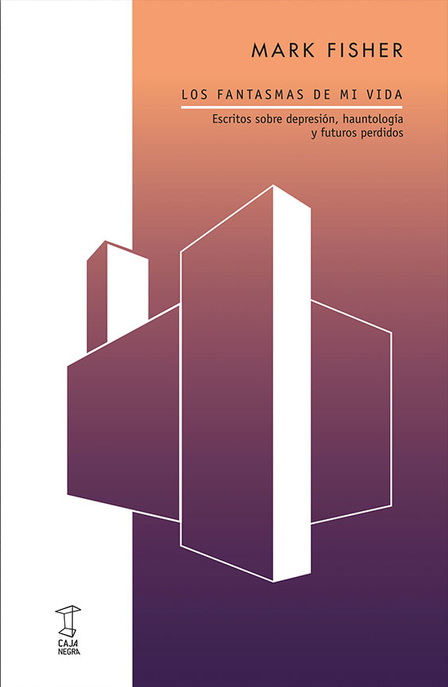

Mark Fisher desarrolla en este libro la noción de hauntología, entendida como la persistencia de los espectros del pasado en la cultura contemporánea. En su análisis, las formas culturales posmodernas están habitadas por los ecos de futuros que nunca se realizaron, de promesas tecnológicas y sociales que se disolvieron. Esta idea dialoga estrechamente con el imaginario del terror analógico: la materialidad degradada de las imágenes, el ruido de las cintas y la recurrencia de los motivos del archivo perdido remiten a un tiempo suspendido. El terror no proviene de una amenaza externa, sino del retorno incesante de un pasado irresuelto, que se manifiesta a través de los residuos materiales de la tecnología.
 Obtener Libro